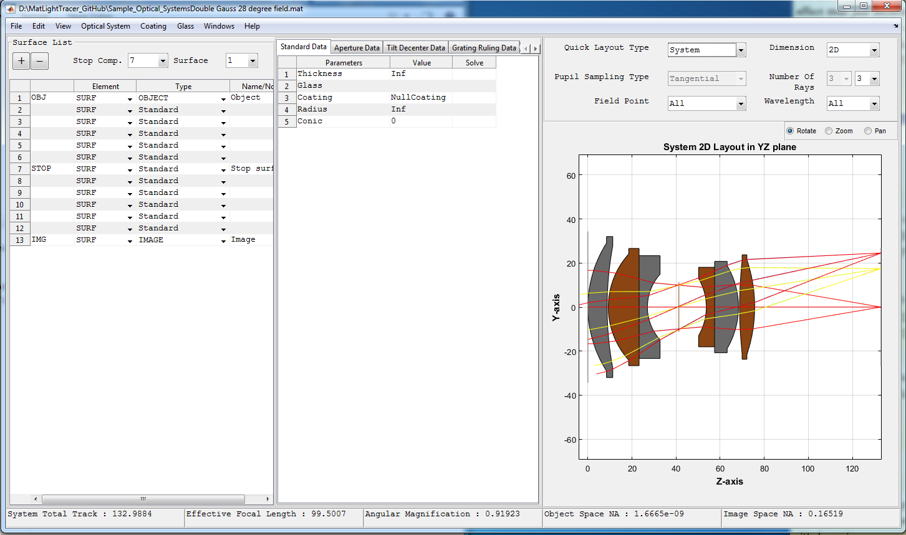

Parent Window
Writing "MLTStartup" in the command window starts the main GUI of the toolbox shown below.

The main window has the following main parts:
- Title Bar:
- The full path name of the current optical system is displayed.
- Menu Bar:
- It contains Menu items which are used to use different features of the toolbox.
- For detailed description see the "Menu Bar" section below.
- Element List panel:
- List of surfaces or components in our optical system. Buttons to add and remove surfaces is also inclued here. The Stop index can also be easily changed.
- Element Parameter Panel:
- Here all parameters of the selected surface can be seen and changed.
- System Quick Layout Panel:
- Used to show the layout of current system or just the selected component or surface. This enables quick view of the system as it is being setup.
- Status Bar:
- It is at the bottom of the window and used to display important information of the current optical system.
Created with the Personal Edition of HelpNDoc: Easily create Web Help sites